Festival de Chatelaillon

Chatelaillon, et son immense plage qui se continue à marée basse par une grande zone presque horizontale qui fait le bonheur des "pêcheurs" de coques.

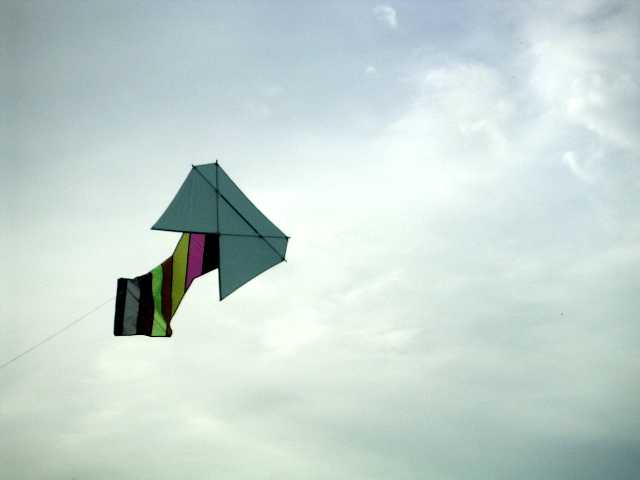
A l'arrivée, Michel Renouis met la dernière main au réglage de sa cravate...

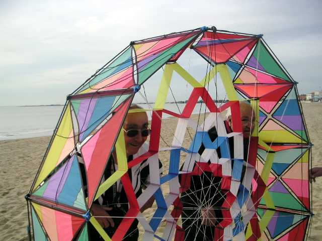
On règle aussi un "circorigide" ou "couronne" de André Cassagnes qui vole très bien après que monsieur Commalonga ait changé moult raccords et tendeurs...

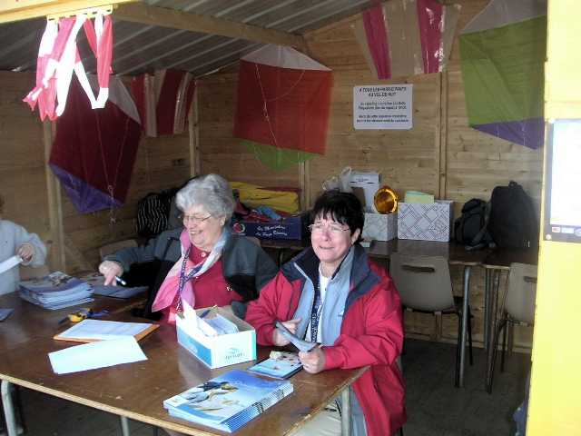
Ces dames prennent place dans la baraque d'accueil où elles se dévoueront tout le week-end, merci à elles. Elles ont du mérite car le samedi, il fera grand beau !

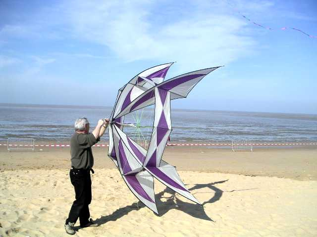
On a construit, pendant l'hiver. Mais un bridage pour que ça vole bien, c'est une opération difficile, surtout sur une structure très originale et esthétique mais aussi très souple...

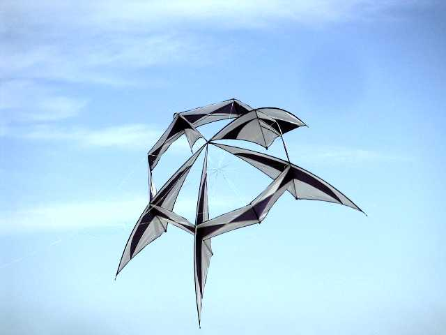
Enfin, la bonne disposition est trouvée, au moins pour le vent du moment.

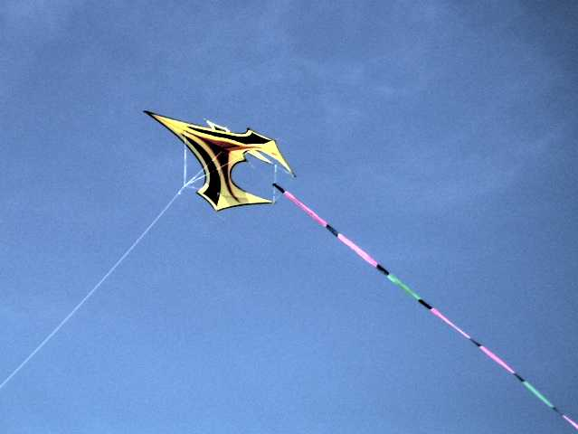
Du même auteur, cet OVNI encore plus souple (c'est seulement la bride qui tient les angles).

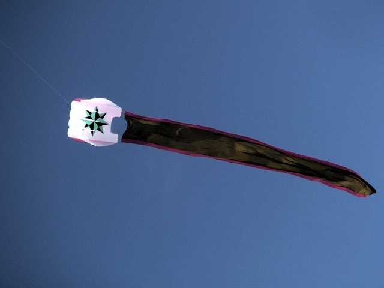
Dans le ciel tout bleu, ce flow-form blanc avec son immense traîne sang-et-or est magnifique.

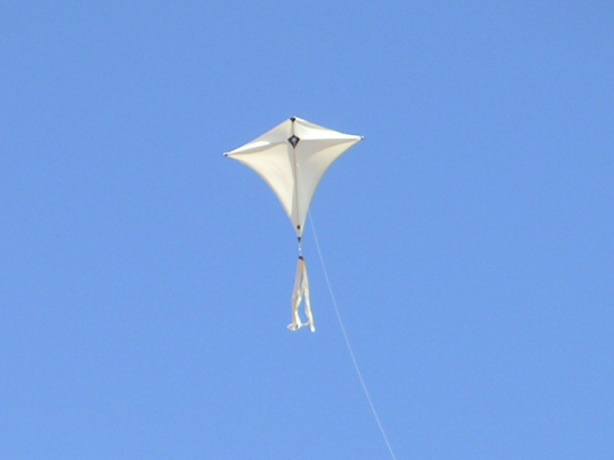
L'Eddy de Yannick a maintenant trouvé sa stabilité, avec cette queue en passementerie. Il est en coton et bois à l'ancienne.

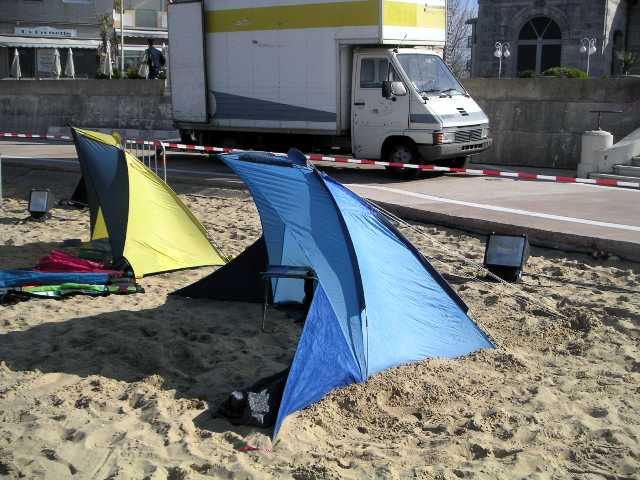
Du même auteur, cette tente augmentée de brise-vents latéraux qui évitent que le sable ne contourne la chose et ne pollue l'intérieur !

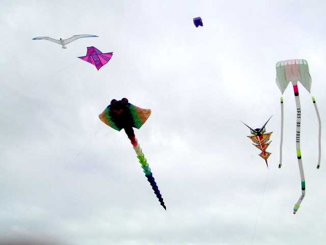
Les grandes machines sont de sortie dans ce vent qui a tourné de la mer.

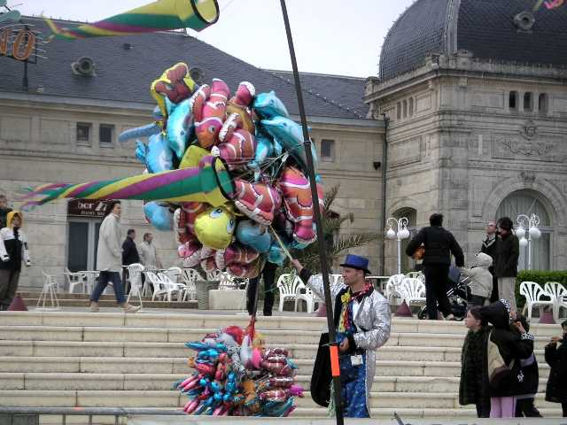
Au sol aussi des gonflables (au gaz). Et Gaby a de la concurrence sérieuse sur le plan vestimentaire !

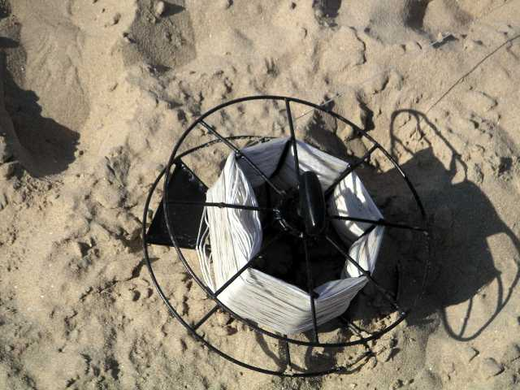
Quand le vent force, il faut avoir construit solide... 10 kg à chaque tour, ça finit par broyer la ferraille soudée !

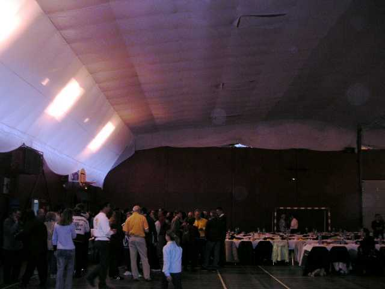
Avant le vol de nuit, briefing puis repas dans le gymnase habituel qui a été décoré d'un sled de 45 m de long et 30 m de large. Plus qu'à le brider !

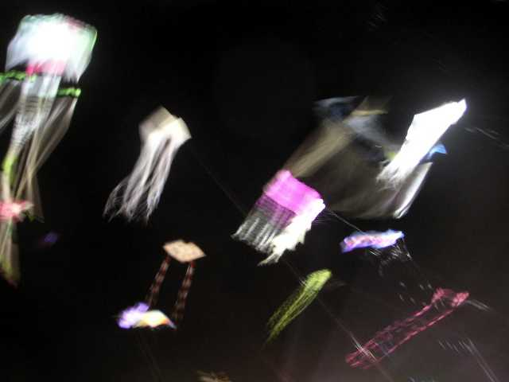
Et puis vol de nuit. Il y aura du beau linge en l'air ! Les photos ? comme d'habitude, très poétiques et vaporeuses. Mon Megoel volera 1 mn 30 s avant de casser, mais il aura participé à l'envol simultané, c'était beau.

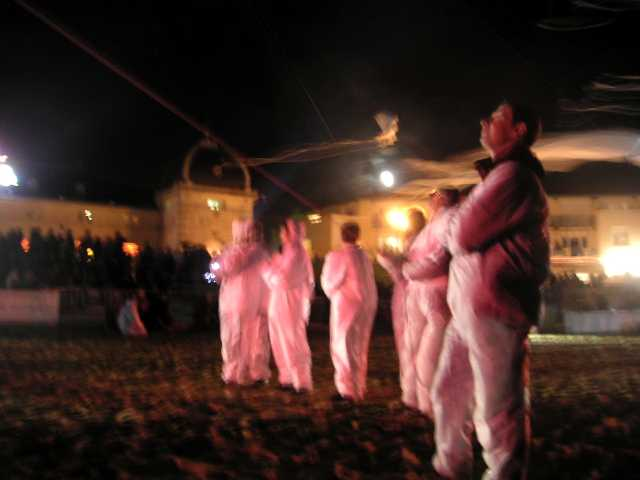
Selon la tradition, les cerfs-volistes sont en combinaisons blanches bien visibles pour le public (et puis ça tient chaud...).

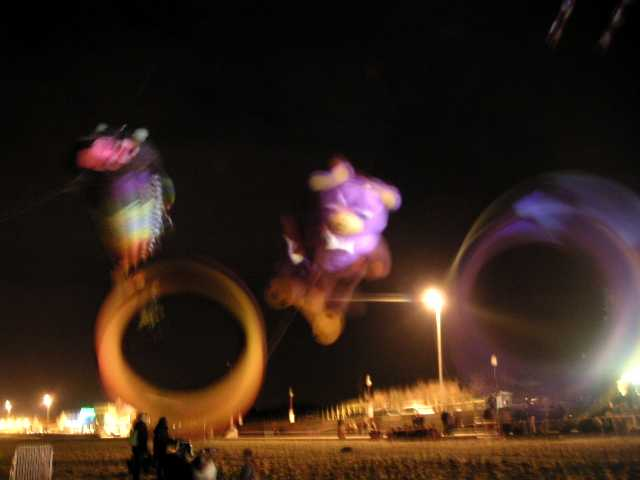
Le Nounours, le trilobite et les gros bols des AWITA (qui viennent ici gratis pour le plaisir) seront de la fête, à côté du terrain principal, pas trop éclairés au début...

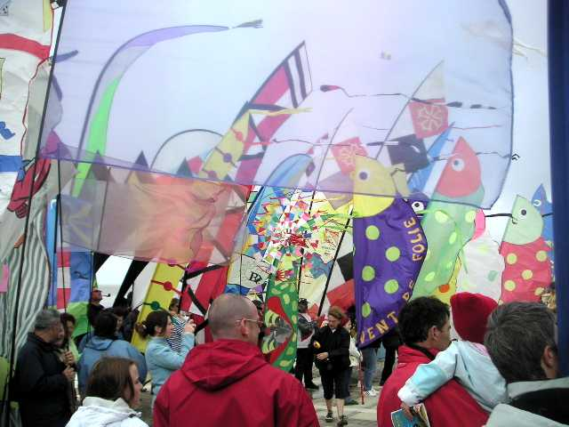
Le dimanche matin, croissants, huîtres et vin blanc, et défilé de bannières.

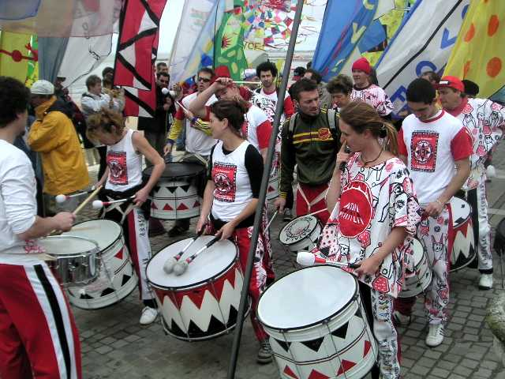
La Batila est prête à donner la cadence, il faut voir leur enthousiasme !

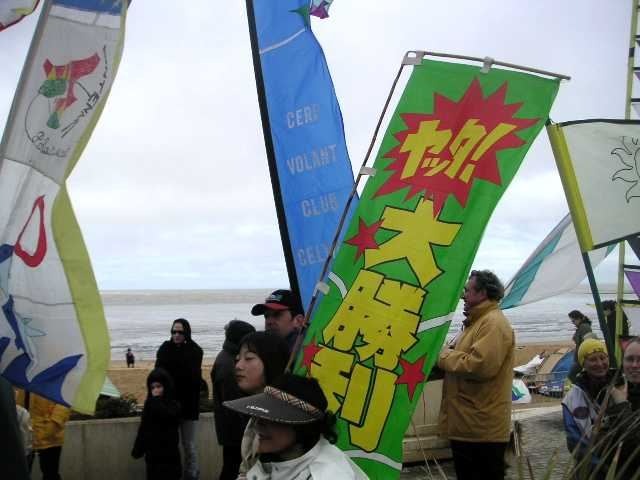
Bannière japonaise : en haut, ça veut dire "Yahou !", en bas "On va vous piler" (traduction libre).

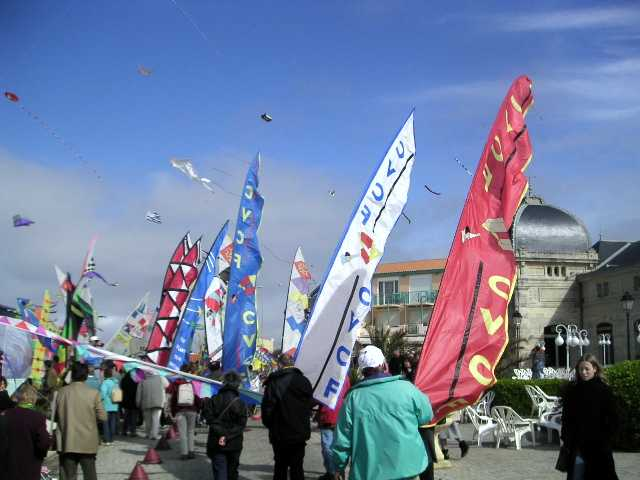
Le CVCF, comme Roland à Roncevaux, assure l'arrière-garde.

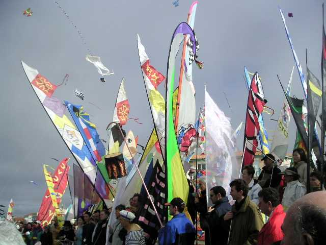
Au retour, petit concert de Batila, pendant que les bannières continuent à parader sur l'escalier du Casino.

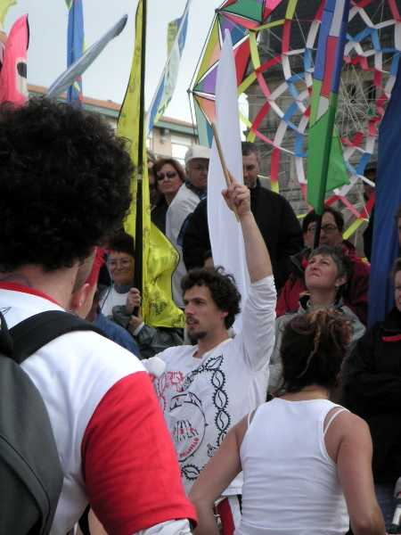
Le Chef d'Orchestre dirige de main de maître tout en donnant la cadence au tambour (pas facile).

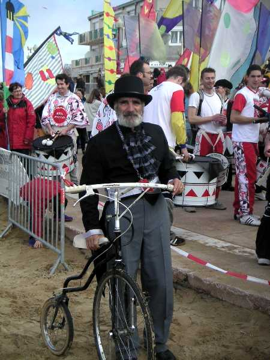
Thème de l'année : les années folles. Gaby a sorti son spencer qui va parfaitement avec l'ambiance et avec son Petit Bi.

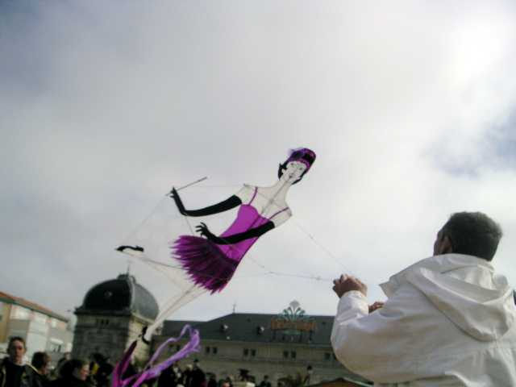
Dans le concours sur le thème, c'est cette danseuse de charleston qui a obtenu le premier prix.

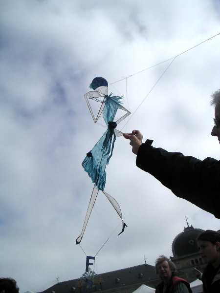
Celle de Thérèse me plait bien aussi dans sa gracilité, mais c'est un concours de cerf-volant et elle n'a guère tenu l'air plus de 4, 6 secondes, alors le classement ! Dur, dur...

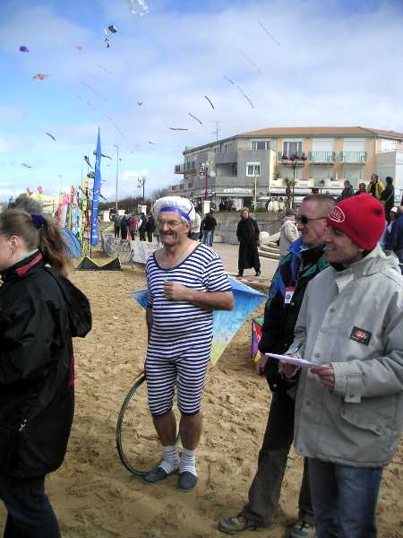
Jean-Claude, comme Gaby, paie de sa personne. Mais il faut avoir la santé en cette saison !

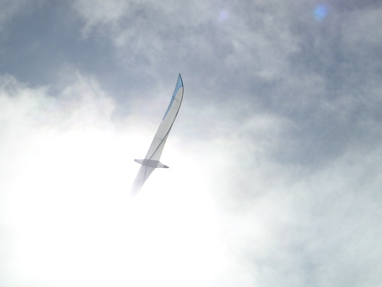
Pendant ce temps, le vent monte doucement et le soleil n'apparaît plus que par moments ! Quand même, l'Albatros, comme Icare, s'y est brûlé les ailes !

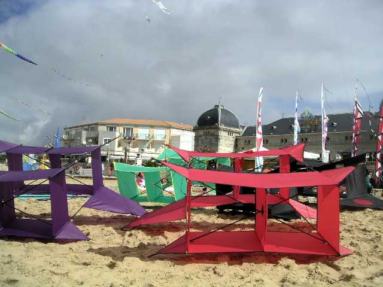
Mais les Sacconey de la bande à Michel envahissent peu à peu l'horizon de ma tente (faut dire que je suis assis bas...) !

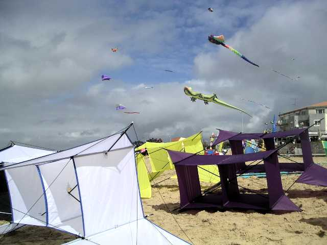
Ils vont voler en train avec une superbe stabilité ! Il faudra seulement les descendre quand le vent forcira, ça commençait à soulever de terre les opérateurs, même non-volontaires pour l'ascension humaine.

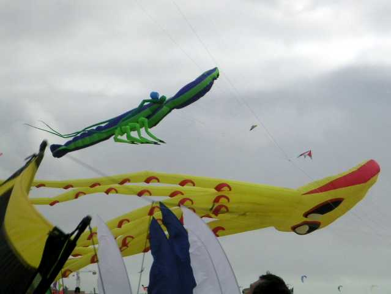
Mais la mer remonte, on est envahi par les homards et les pieuvres !

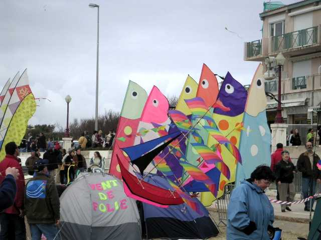
En haut de la plage, les bannières de Vent de Folie protègent leurs tentes, pendant qu'un bateau ivre caracole au premier plan.

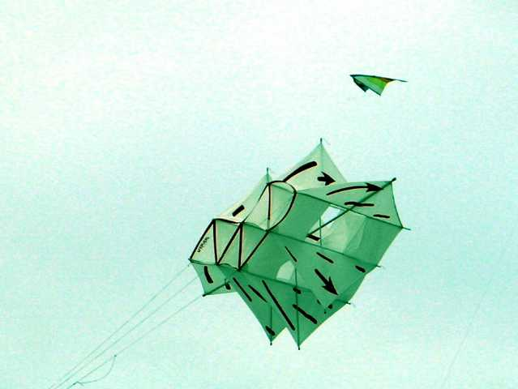
Le très grand et superbe cerf-volant toulousain avec ses tubes alu de 7 (cm) a bien volé dans un vent solide qui lui allait parfaitement !

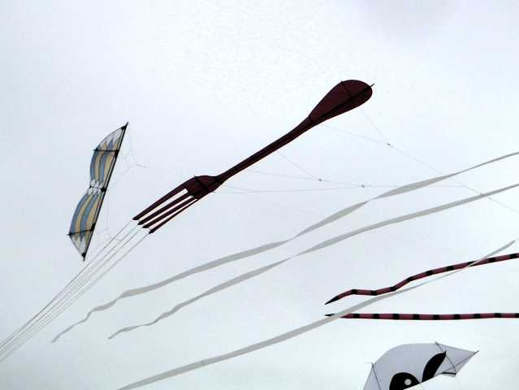
Thérèse n'a pas perdu son coup de fourchette, même si les spaghettis s'emmêlent quelquefois un peu dans les lignes des voisins, bien serrés à marée haute...

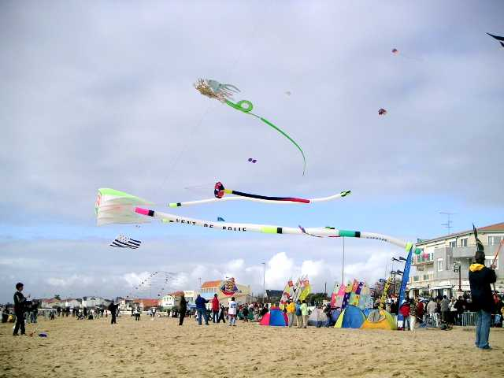
Malgré quelques crashs monstrueux sur le public par emmêlage, le méga flow-form de Vierzon est toujours en l'air !

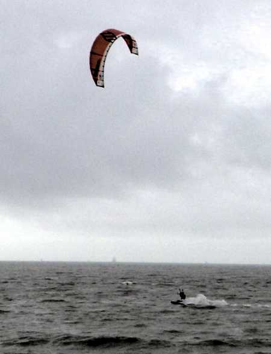
Sur la mer, les kite-surfers s'en donnent à coeur joie, sur des planches qui semblent être des planches de surf normal (pourquoi ? le vent, les vagues, la recherche de vitesse ? je n'y connais rien, moi...) !

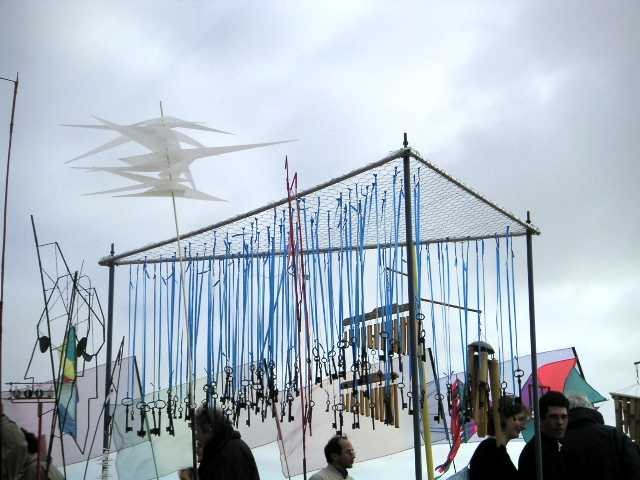
Dans les Couloirs du Vent (faut plus dire les Jardins Du Vent, y a un ... qui a piqué et déposé le nom pour se faire valoir. Je vais bientôt déposer "cerf-volant", z'aurez qu'à trouver autre chose !), Patrick présente ses bleuets et ses clés.

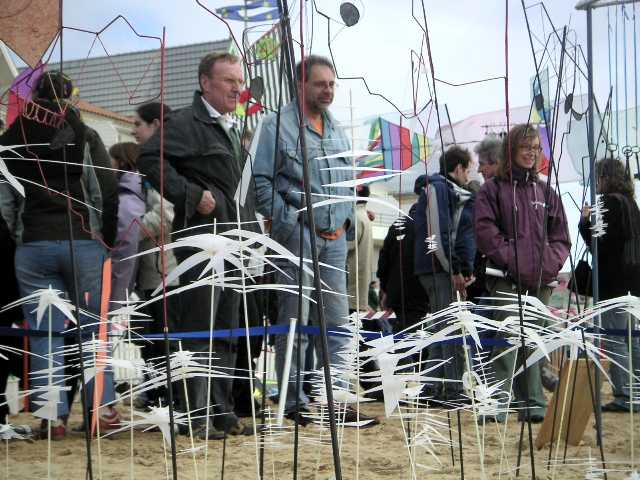
Thérèse a créé cette poétique nébuleuse de naines blanches !

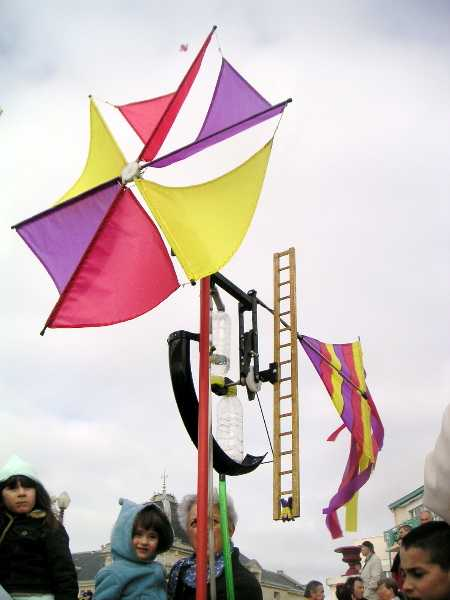
Et Joël a encore modifié son dernier moulin, avec un petit bonhomme qui descend inlassablement une échelle ! Il existe aussi une version "météo" avec une grenouille.

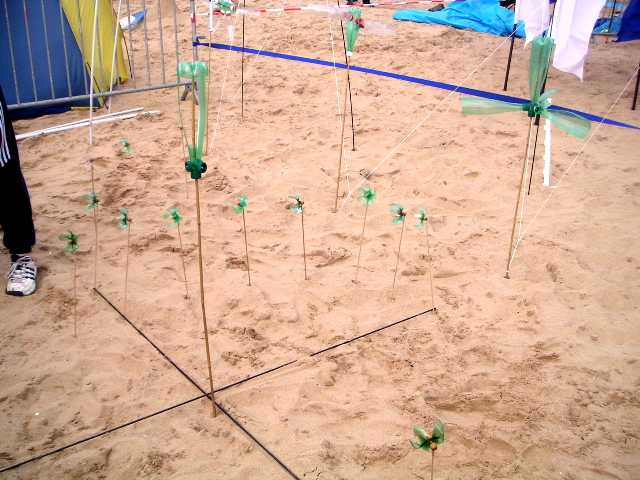
Pierre Fontan (vous savez, le béret, l'accent des Landes...) a bâti ce cadran solaire gnomonique (le gnomon, c'est un nom grec pour le bâton) et multirotatif. Dommage, le vent travaille, mais le soleil ne veut rien fiche !

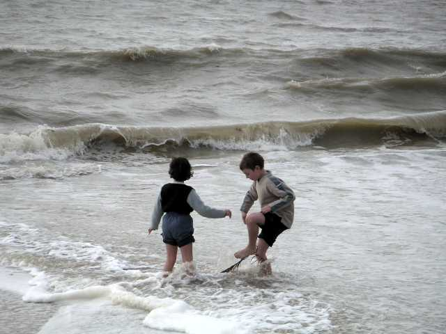
Malgré la température à peine printanière, les enfants jouent dans l'eau. On a même vu 2 baigneurs (pas longtemps...) !

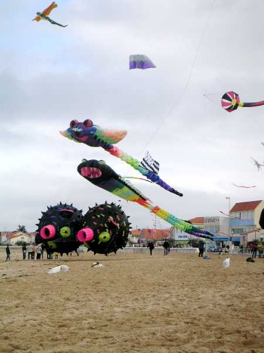
Et les fugus continuent leurs mamours...

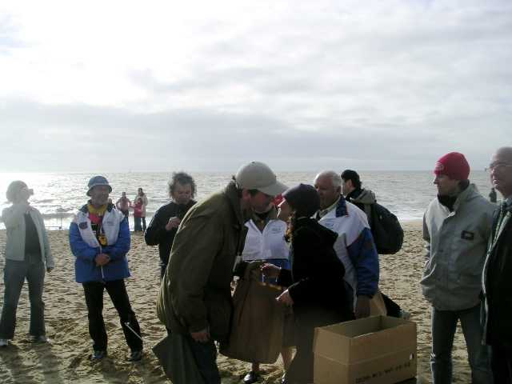
Remise des prix des concours Création, Rokkaku et Aérophoto ! Rien que pour la bise, Christophe est bien content d'être lauréat...

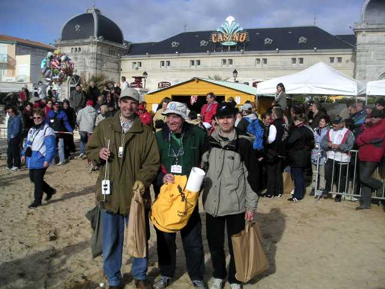
Les gagnants du concours photo, au milieu Christian Bécot.

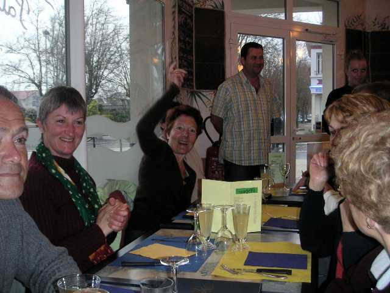
Dimanche soir, on ne va pas se quitter comme ça ! Le plus dur, c'est de passer la commande...

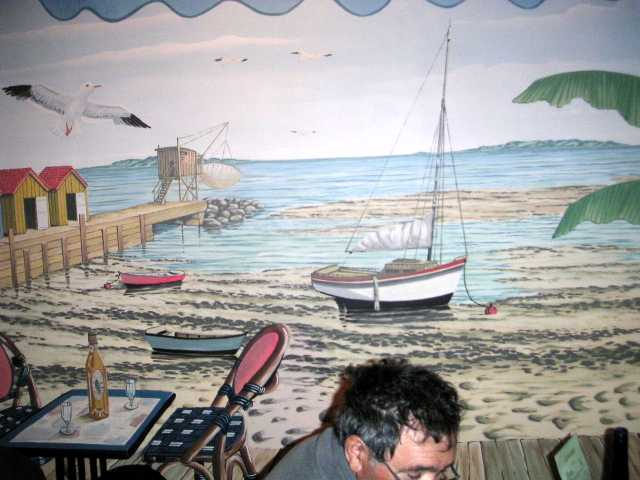
Le restaurant a une déco d'enfer très couleur locale !

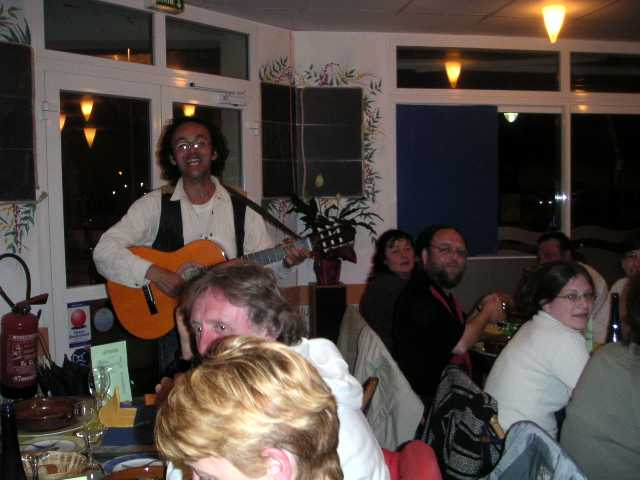
Un guitariste apporte une folle ambiance !

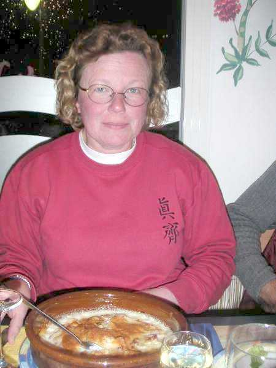
Ah, ben ma savoyarde, c'est pas trop tôt !

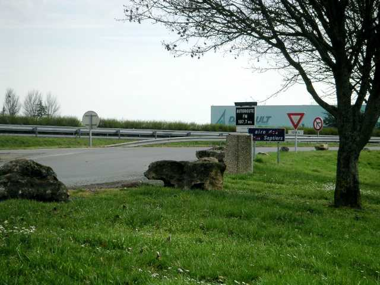
Mais après une bonne nuit au parking de la pointe du Chay (pour les camping-caristes), il faut rentrer ! Logos rencontre un copain sur une aire d'autoroute...

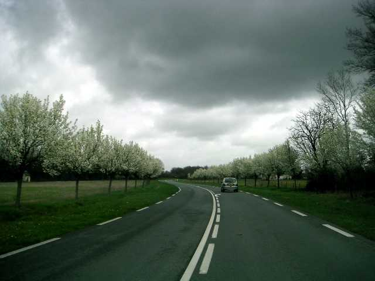
Et l'organisation a bien fait les choses ! Une haie de fleurs pour fêter ça... Merci les GO de Poitou-Charentes et toute l'équipe !